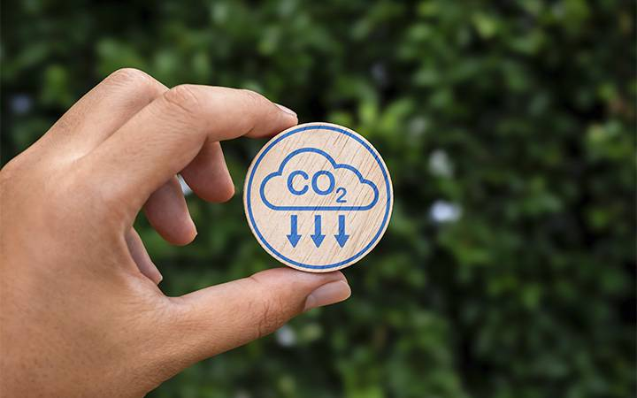

Aqui entrará a sua explicação detalhada sobre o Plano de Agricultura de Baixa Emissão de Carbono. Você pode abordar as diretrizes do plano, os compromissos com a redução de gases de efeito estufa e o impacto positivo desse modelo de sustentabilidade na agricultura brasileira moderna.

Aqui você explicará o funcionamento do Sistema Indoor. Detalhe como o cultivo em ambientes controlados (fazendas verticais, hidroponia automatizada, iluminação LED artificial) otimiza os recursos hídricos e espaciais, servindo como um braço tecnológico essencial para os objetivos do Plano ABC.